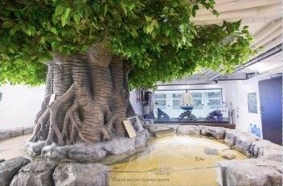

The Harbour School Marine Science Center
I led the design and construction of a marine science center and wet lab from concept to opening, managing the budget, vendors and construction professionals. The center sits among public housing, so the build also meant working closely with neighbors, the Hong Kong Government and local NGOs.
Then I built the program to fill it: a hands-on K-12 marine science curriculum where every class met in the wet lab, aboard the school's ship, or on Hong Kong's outlying islands. I taught students with a wide range of learning needs, including twice-exceptional learners, and recommended the accommodations that let them do the work.

The center is part of The Grove, the school's campus, which won a 2020 World Design Award. It still anchors the school's marine program, and in 2023 The Harbour School was named to the Top 10 shortlist for the World's Best School Prize for Environmental Action. Read the news
“Ms. Gonzalez designed a state-of-the-art hands-on marine science wet lab which has been constructed now on our school site. Her abilities to work with administration, construction professionals, and teachers is a credit to her abilities as a team player.”Science Coordinator, The Harbour School